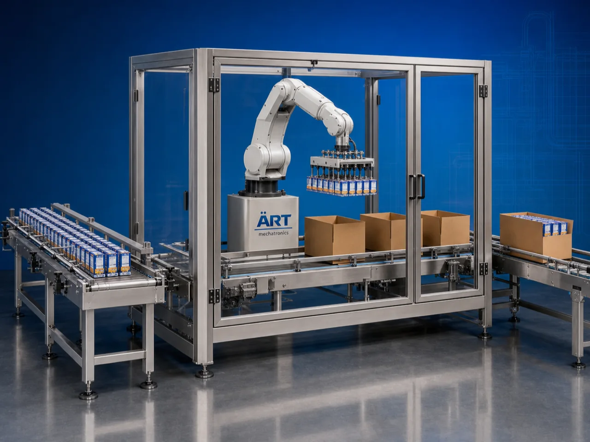

Robotic Case Packer Machine (Automatic Robotic Case Packing System)
A Robotic Case Packer Machine, also known as an Automatic Case Packing Machine, Robotic Carton Packing System, End-of-Line Case Packing Machine, or Industrial Robotic Packaging System, is an advanced industrial automation solution designed for automatic product picking, grouping, orientation, collating, carton loading, case packing, and high-speed end-of-line packaging operations for pouches, sachets, bottles, cartons, boxes, cans, jars, and FMCG products.

About the Robotic Case Packer
Robotic case packing systems are widely used for:
- Carton case packing
- Pouch case packing
- Bottle case packing
- FMCG secondary packaging
- Food product case loading
- Beverage packaging operations
- Pharmaceutical case packing
- High-speed end-of-line automation
The machine improves:
- Packaging speed
- Product handling accuracy
- Labor productivity
- Packaging consistency
- Production automation
- Product safety
- End-of-line efficiency
Industrial robotic case packer machines use:
- Robotic pick-and-place systems
- Servo synchronized conveyor systems
- PLC and HMI automation controls
- Vision inspection systems
- Automatic case loading mechanisms
to automatically pick, arrange, and load products into corrugated shipping cases with superior speed, precision, and production efficiency.
Robotic case packer machines are widely used in industries such as:
FMCG industries Food processing industries Beverage industries Pharmaceutical industries Tobacco industries Pan masala industries Cosmetic industries Consumer goods industries
where high-speed secondary packaging and intelligent automation are essential.
The machine is highly suitable for:
- Pouch case packing
- Bottle case packing
- Mono carton case loading
- Sachet case packing
- FMCG secondary packaging
- Export shipment packaging
ART Mechatronics offers high-performance robotic case packer machines, engineered for continuous industrial operation, intelligent product handling, high-speed automation, and reliable long-term packaging performance.
Working Principle of Robotic Case Packer Machine
- 1. Product Feeding Products are fed continuously through synchronized conveyor systems.
- 2. Product Detection & Orientation Process Sensors and vision systems identify, orient, and synchronize products for robotic picking operations.
Servo synchronization ensures accurate product positioning and smooth handling.
- 3. Robotic Pick & Place Operation Robotic system handles: ✔ Pouches ✔ Sachets ✔ Bottles ✔ Cans ✔ Mono cartons ✔ Boxes ✔ FMCG products
accurately and continuously.
- 4. Case Feeding & Product Loading Machine automatically erects or positions corrugated shipping cases and loads products in predefined patterns.
- 5. Case Transfer & Sealing Integration Filled cases are transferred automatically for: Case sealing Taping Strapping Palletizing Dispatch operations
- 6. Automation & Line Integration Machine integrates with: Packaging lines Cartoning systems Overwrapping systems Palletizers Warehouse automation systems
for complete end-of-line packaging automation.
Types of Robotic Case Packer Machines
- 1. Pick & Place Robotic Case Packer Designed for: ✔ High-speed robotic product handling applications
- 2. Pouch Case Packing Machine Suitable for: ✔ Pouch and sachet secondary packaging systems
- 3. Bottle Case Packing Machine Uses: ✔ Beverage and liquid product case loading systems
- 4. Carton Case Packer Machine Designed for: ✔ Mono carton and retail box case packing systems
- 5. Servo Driven Robotic Case Packer Suitable for: ✔ Precision high-speed case packing operations
- 6. Fully Automatic Robotic Case Packing System Designed for: ✔ Complete industrial end-of-line automation lines
Industries Using Robotic Case Packer Machines
🛒 FMCG Industry Consumer product secondary packaging and case packing systems. 🍃 Food Processing Industry Snack pouches, food cartons, and retail packaging case loading systems. 🥤 Beverage Industry Bottle, can, and beverage carton case packing systems. 💊 Pharmaceutical Industry Medicine carton and healthcare product case packing systems. 🚬 Tobacco Industry Cigarette cartons, shisha tobacco packs, and oral nicotine product case packing systems. 🧴 Cosmetic Industry Cosmetic product and personal care retail packaging case loading systems.
Features & Advantages
- High-speed automatic robotic case packing operation
- Intelligent robotic pick-and-place technology
- Accurate product grouping and loading systems
- PLC and servo automation control systems
- Reduces labor dependency and manual handling
- Improves packaging consistency and productivity
- Supports multiple case sizes and product formats
- Reliable long-term industrial performance
- Smooth and continuous end-of-line automation
Technical Highlights
Machine Type: Robotic case packer machine Automatic case loading system Industrial robotic packaging machine Handling Integration: Robotic pick-and-place systems Servo conveyor systems Vision inspection systems Features: PLC control system Servo synchronization Touchscreen HMI Automatic case loading Pattern programming system Applications: Pouches Bottles Sachets Mono cartons Boxes Retail products Automation: Semi-automatic Fully automatic industrial systems
Turnkey Robotic Case Packing Solutions
ART Mechatronics offers: Complete robotic case packing systems End-of-line automation solutions Packaging automation integration systems Conveyor synchronization systems Installation & commissioning After-sales service & AMC
Why Choose Art Mechatronics
Expertise in industrial packaging and automation systems Customized robotic case packing solutions for multiple industries High-performance and durable automation technology Advanced PLC and servo automation systems Proven industrial packaging performance across sectors
Applications
FMCG Packaging Facilities Food Processing Industries Beverage Manufacturing Plants Pharmaceutical Packaging Units Tobacco Packaging Industries Cosmetic Manufacturing Facilities
Related Automation & Robotics machines
Get pricing & specs for the Robotic Case Packer
Share the product, target capacity, current process and plant location. These details help our engineers discuss the right machine or line configuration.
One partner, from design to start-up
ART Mechatronics designs, manufactures, installs and commissions your Robotic Case Packer solution with regional presence in India, UAE and Thailand.